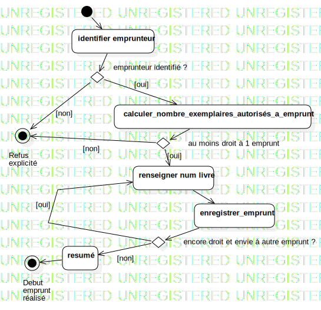

Activity1
UMLActivity
bibliotheque
::
Model_UseCases
::
enregistrer debut emprunt
::
Activity1
Description
none
Diagrams

ActivityDiagramDebutEmprunt
Nodes
InitialNode1
ActivityFinalNode1
ActivityFinalNode2
identifier emprunteur
calculer_nombre_exemplaires_autorisés_a_emprunt
renseigner num livre
enregistrer_emprunt
DecisionNode1
DecisionNode2
resumé
DecisionNode3
Edges
(InitialNode1→identifier emprunteur)
emprunteur identifié ? (identifier emprunteur→DecisionNode1)
(DecisionNode1→calculer_nombre_exemplaires_autorisés_a_emprunt)
(DecisionNode1→ActivityFinalNode2)
au moins droit à 1 emprunt (calculer_nombre_exemplaires_autorisés_a_emprunt→DecisionNode2)
(DecisionNode2→renseigner num livre)
(DecisionNode2→ActivityFinalNode2)
(renseigner num livre→enregistrer_emprunt)
encore droit et envie à autre emprunt ? (enregistrer_emprunt→DecisionNode3)
(DecisionNode3→resumé)
(resumé→ActivityFinalNode1)
(DecisionNode3→renseigner num livre)
Properties
Name
Value
name
Activity1
stereotype
null
visibility
public
isReentrant
true
isReadOnly
false
isSingleExecution
false
Owned Elements
ActivityDiagramDebutEmprunt